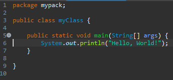
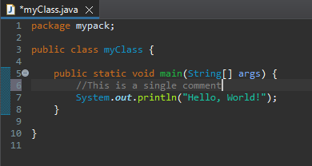
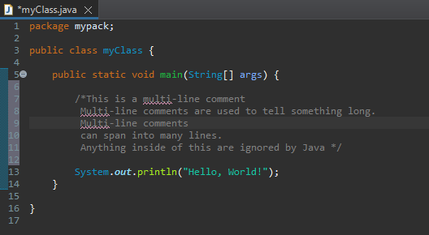
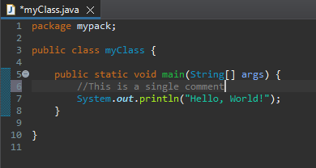
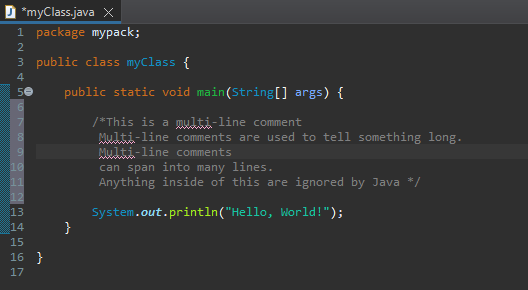

Comments in Java helps developers understand what lines of code do. Comments are shown in the IDE but are not read and executed by the program. Java has a variety of comments: the Single line comments and multi-line comments.
Lines in a Java IDE refers to the line of codes labeled by a number.

In this picture, the line where the System.out.println(“Hello, World!”); is in line 6.
Single-line Comments
Being referred to as a single line comment, means that a comment is only found and will remain and be considered as a Java comment at a single-line only. Meaning, a comment in line 6 should only start and end at line 6. Texts below the single line comment is no longer a comment but must be a functional line of code.
To create a single line comment, two forward slashes (//) are used.

Multi-line Comments
In Java, comments could span into many lines. This happens if the comment is used to tell something long. To create a multi-line comment, /* your comment */ is used. Anything between is ignored by the program.

CodeDive!
Let's comment! In this activity, make a single-line comment and a multi-line comment. Write a single-line comment at line 3, saying "This prints a message.". Next, print a multiline comment spanning from line 5-6 saying "The message was printed. The program was finished." Lastly, execute it and then smile. 😉
MAWD
THINGs
Java Comments
Lesson 3
<Prev
Next>
Understanding Java Comments
Single-line Comments

Multi-line Comments

CodeDive!
Let's comment! In this activity, make a single-line comment and a multi-line comment. Write a single-line comment at line 3, saying "This prints a message.". Next, print a multiline comment spanning from line 5-6 saying "The message was printed. The program was finished." Lastly, execute it and then smile. 😉